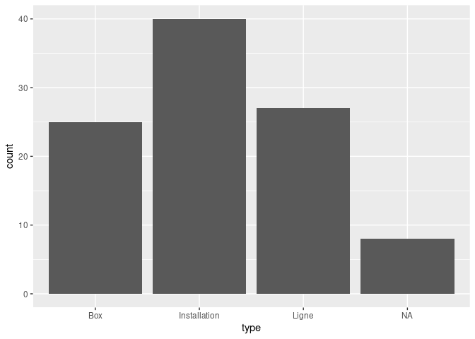
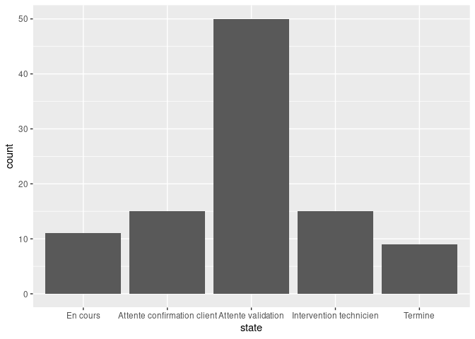

The goal of {fakir} is to provide fake datasets that can be used to teach R.
The full documentation is in this {pkgdown} site: https://thinkr-open.github.io/fakir/
- Video presentation of {fakir} by Abdul Majed: https://www.youtube.com/watch?v=EhhljL5zaWs
Characteristics
This package is designed for teaching data wrangling and data visualisation:
- some datasets follow the tidy-data principles, others don’t.
- Some missing values are set for numeric and categorical variables
- Some variables values are correlated
These datasets are suitable to introduce to the {tidyverse} and to provide examples for main functions.
Supported languages are, for now, French and US English.
Examples
Fake support ticket base :
- All tickets
library(fakir) fake_ticket_client(vol = 10) #> # A tibble: 10 x 25 #> ref num_client first last job age region id_dpt departement #> <chr> <chr> <chr> <chr> <chr> <dbl> <chr> <chr> <chr> #> 1 DOSS… 79 Jovan O'Ke… Gene… 22 <NA> 68 Haut-Rhin #> 2 DOSS… 69 Miss Lean… Emer… 68 Midi-… 32 Gers #> 3 DOSS… 120 Odell Stok… Engi… 24 Rhône… 01 Ain #> 4 DOSS… 31 Loren Lars… <NA> NA Midi-… 31 Haute-Garo… #> 5 DOSS… 59 Mayb… Maye… Furt… 18 Poito… 86 Vienne #> 6 DOSS… 118 Jama… Ober… Engi… 18 Rhône… 07 Ardèche #> 7 DOSS… 77 Lee Scha… Admi… NA Alsace 68 Haut-Rhin #> 8 DOSS… 65 Deme… Auer Cont… 21 Poito… 17 Charente-M… #> 9 DOSS… 141 Wilf… Harv… Educ… 53 Pays … 53 Mayenne #> 10 DOSS… 182 Addy… Nien… Earl… 65 Basse… 14 Calvados #> # … with 16 more variables: cb_provider <chr>, name <chr>, entry_date <dttm>, #> # fidelity_points <dbl>, priority_encoded <dbl>, priority <fct>, #> # timestamp <date>, year <dbl>, month <dbl>, day <int>, supported <chr>, #> # supported_encoded <int>, type <chr>, type_encoded <int>, state <fct>, #> # source_call <fct>
- Separate tickets and client databases
tickets_db <- fake_ticket_client(vol = 100, split = TRUE) tickets_db #> $clients #> # A tibble: 200 x 14 #> num_client first last job age region id_dpt departement cb_provider #> * <chr> <chr> <chr> <chr> <dbl> <chr> <chr> <chr> <chr> #> 1 1 Solo… Hean… Civi… 53 Midi-… 82 <NA> Diners Clu… #> 2 2 Karma Will… Scie… 81 Midi-… 81 Tarn VISA 13 di… #> 3 3 Press Kulas Anim… NA Haute… 27 Eure <NA> #> 4 4 Laken McDe… <NA> NA Breta… 29 Finistère <NA> #> 5 5 Sydn… Jask… Hort… 30 Centre 37 Indre-et-L… <NA> #> 6 6 Clay… Runo… Comm… NA Rhône… 42 Loire Diners Clu… #> 7 7 Robe… Purd… Fina… 60 Prove… 04 Alpes-de-H… <NA> #> 8 8 Dr. Rona… Astr… 30 <NA> 24 Dordogne <NA> #> 9 9 Miss Alon… Occu… 18 Langu… 30 Gard Diners Clu… #> 10 10 Vern… Ondr… Clin… 19 <NA> 01 Ain <NA> #> # … with 190 more rows, and 5 more variables: name <chr>, entry_date <dttm>, #> # fidelity_points <dbl>, priority_encoded <dbl>, priority <fct> #> #> $tickets #> # A tibble: 100 x 10 #> ref num_client year month day timestamp supported type state #> <chr> <chr> <dbl> <dbl> <int> <date> <chr> <chr> <fct> #> 1 DOSS… 1 2014 4 1 2014-04-01 Non Inst… Term… #> 2 DOSS… 22 2018 1 21 2018-01-21 Non Inst… Atte… #> 3 DOSS… 9 2018 2 25 2018-02-25 Non Inst… Term… #> 4 DOSS… 8 2018 3 11 2018-03-11 Non Box Atte… #> 5 DOSS… 30 2018 3 29 2018-03-29 Oui Inst… Inte… #> 6 DOSS… 10 2018 4 10 2018-04-10 Oui Inst… Atte… #> 7 DOSS… 37 2018 5 8 2018-05-08 Non Ligne Atte… #> 8 DOSS… 37 2018 6 28 2018-06-28 Non Box Atte… #> 9 DOSS… 24 2018 7 5 2018-07-05 Non <NA> En c… #> 10 DOSS… 12 2018 7 22 2018-07-22 Non Inst… Atte… #> # … with 90 more rows, and 1 more variable: source_call <fct> ggplot(tickets_db$clients) + aes(entry_date, fidelity_points) + geom_point() + geom_smooth()

ggplot(tickets_db$tickets) + aes(type) + geom_bar()

ggplot(tickets_db$tickets) + aes(state) + geom_bar()

- Join with internal {sf} spatial dataset
clients_map <- tickets_db$clients %>% group_by(id_dpt) %>% summarise( number_of_clients = n(), average_fidelity = mean(fidelity_points, na.rm = TRUE) ) %>% full_join(fra_sf, by = "id_dpt") %>% st_sf() ggplot(clients_map) + geom_sf(aes(fill = average_fidelity)) + scale_fill_viridis_c() + coord_sf( crs = 2154, datum = 4326 )

Fake products
- Create a fake dataset of connected wearables
fake_products(10) #> # A tibble: 10 x 8 #> name brand color price body_location category sent_from id #> <chr> <chr> <chr> <int> <chr> <chr> <chr> <int> #> 1 Step and Dis… Larkin, … Pink 3 Waist Industri… Taiwan 1 #> 2 Biking Track… Larkin, … OliveD… 5 Waist Pets and… United S… 2 #> 3 Wearable Tra… Moen, Mo… Beige 4 Feet Lifestyle Netherla… 3 #> 4 Multifunctio… Weimann,… Yellow… 5 Head Lifestyle China 4 #> 5 Action Camer… Blanda, … Moccas… 10 Brain Lifestyle Italy 5 #> 6 Strapless He… Mann and… DeepPi… 4 Head Medical Finland 6 #> 7 Action Camer… Mann and… Maroon 5 Feet Entertai… Finland 7 #> 8 Microcontrol… Moen, Mo… Pink 3 Neck Fitness Finland 8 #> 9 Microcontrol… Moen, Mo… Plum 5 Arms Awesome France 9 #> 10 Wearable AUS… Moen, Mo… DarkRed 9 Torso Medical Italy 10
Fake website visits
fake_visits(from = "2017-01-01", to = "2017-01-31") #> # A tibble: 31 x 8 #> timestamp year month day home about blog contact #> * <date> <dbl> <dbl> <int> <int> <int> <int> <int> #> 1 2017-01-01 2017 1 1 369 220 404 210 #> 2 2017-01-02 2017 1 2 159 250 414 490 #> 3 2017-01-03 2017 1 3 436 170 498 456 #> 4 2017-01-04 2017 1 4 NA 258 526 392 #> 5 2017-01-05 2017 1 5 362 NA 407 291 #> 6 2017-01-06 2017 1 6 245 145 576 90 #> 7 2017-01-07 2017 1 7 NA NA 484 167 #> 8 2017-01-08 2017 1 8 461 103 441 NA #> 9 2017-01-09 2017 1 9 337 113 673 379 #> 10 2017-01-10 2017 1 10 NA 169 308 139 #> # … with 21 more rows
Fake questionnaire on mean of transport / goal
- All answers
fake_sondage_answers(n = 10) #> # A tibble: 30 x 12 #> id_individu age sexe region id_departement nom_departement #> <chr> <int> <chr> <chr> <chr> <chr> #> 1 ID-NYDZ-010 NA <NA> <NA> 36 Indre #> 2 ID-NYDZ-010 NA <NA> <NA> 36 Indre #> 3 ID-NYDZ-010 NA <NA> <NA> 36 Indre #> 4 ID-PWLB-009 71 F Rhône… 26 Drôme #> 5 ID-PWLB-009 71 F Rhône… 26 Drôme #> 6 ID-PWLB-009 71 F Rhône… 26 Drôme #> 7 ID-NMQG-001 42 M Rhône… 74 Haute-Savoie #> 8 ID-NMQG-001 42 M Rhône… 74 Haute-Savoie #> 9 ID-NMQG-001 42 M Rhône… 74 Haute-Savoie #> 10 ID-RJXN-002 71 O Picar… 80 <NA> #> # … with 20 more rows, and 6 more variables: question_date <dttm>, year <dbl>, #> # type <chr>, distance_km <dbl>, transport <fct>, #> # temps_trajet_en_heures <dbl>
- Separate individuals and their answers
fake_sondage_answers(n = 10, split = TRUE) #> $individus #> # A tibble: 10 x 8 #> id_individu age sexe region id_departement nom_departement #> <chr> <int> <chr> <chr> <chr> <chr> #> 1 ID-NYDZ-010 NA <NA> Haute… 76 Seine-Maritime #> 2 ID-PWLB-009 71 F Prove… 84 <NA> #> 3 ID-NMQG-001 42 M Breta… 29 Finistère #> 4 ID-RJXN-002 71 O Aquit… 33 Gironde #> 5 ID-MROK-007 41 M Breta… 35 Ille-et-Vilaine #> 6 ID-VMKS-004 33 O Rhône… 26 Drôme #> 7 ID-XEMZ-003 81 O Midi-… 82 Tarn-et-Garonne #> 8 ID-EUDQ-005 44 M Prove… 84 Vaucluse #> 9 ID-DCIZ-008 92 O Centre 18 Cher #> 10 ID-KPUS-006 57 O <NA> 67 Bas-Rhin #> # … with 2 more variables: question_date <dttm>, year <dbl> #> #> $answers #> # A tibble: 30 x 5 #> id_individu type distance_km transport temps_trajet_en_heures #> <chr> <chr> <dbl> <fct> <dbl> #> 1 ID-NYDZ-010 travail 12.2 voiture 0.15 #> 2 ID-NYDZ-010 commerces 9.61 bus 1.01 #> 3 ID-NYDZ-010 loisirs 549. avion 0.27 #> 4 ID-PWLB-009 travail 11.9 voiture 0.14 #> 5 ID-PWLB-009 commerces 27.4 voiture 0.34 #> 6 ID-PWLB-009 loisirs 210. train 0.42 #> 7 ID-NMQG-001 travail 2.38 velo 0.43 #> 8 ID-NMQG-001 commerces 14.9 voiture 0.18 #> 9 ID-NMQG-001 loisirs 446. train 0.89 #> 10 ID-RJXN-002 travail 6.18 mobylette 0.75 #> # … with 20 more rows
fake transport use
answers <- fake_sondage_answers(n = 30) answers #> # A tibble: 90 x 12 #> id_individu age sexe region id_departement nom_departement #> <chr> <int> <chr> <chr> <chr> <chr> #> 1 ID-MROK-007 NA M <NA> 87 Haute-Vienne #> 2 ID-MROK-007 NA M <NA> 87 Haute-Vienne #> 3 ID-MROK-007 NA M <NA> 87 Haute-Vienne #> 4 ID-NYDZ-010 49 M <NA> 23 Creuse #> 5 ID-NYDZ-010 49 M <NA> 23 Creuse #> 6 ID-NYDZ-010 49 M <NA> 23 Creuse #> 7 ID-HXOG-015 50 M Île-d… 95 Val-d'Oise #> 8 ID-HXOG-015 50 M Île-d… 95 Val-d'Oise #> 9 ID-HXOG-015 50 M Île-d… 95 Val-d'Oise #> 10 ID-MZNB-024 70 F Franc… 90 Territoire de … #> # … with 80 more rows, and 6 more variables: question_date <dttm>, year <dbl>, #> # type <chr>, distance_km <dbl>, transport <fct>, #> # temps_trajet_en_heures <dbl> ggplot(answers) + aes(age, log(distance_km), colour = type) + geom_point() + geom_smooth() + facet_wrap(~type, scales = "free_y") #> Warning: Removed 6 rows containing non-finite values (stat_smooth). #> Warning: Removed 6 rows containing missing values (geom_point).

Prior work
This package is heavily inspired by {charlatan}.
Scott Chamberlain (2017). charlatan: Make Fake Data. R package version 0.1.0. https://CRAN.R-project.org/package=charlatan
Contribute
You can contribute to {fakir} in two ways:
COC
Please note that this project is released with a Contributor Code of Conduct. By participating in this project you agree to abide by its terms.